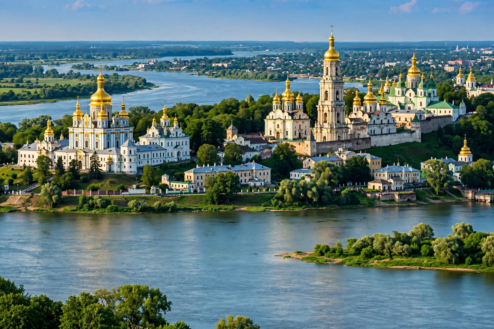

Kyiv

Kyiv is the capital and most populous city of Ukraine, in north-central Ukraine on the Dnipro River, and one of the oldest cities in Eastern Europe.
History
A centre of the Kyivan Rus' in the Middle Ages, Kyiv endured Mongol destruction in 1240 and centuries of Lithuanian, Polish and Russian rule. It became the capital of independent Ukraine in 1991 and, from February 2022, a primary target and symbol of resistance in the Russo-Ukrainian War, enduring missile and drone attacks while remaining the seat of government.
Landmarks
The city is known for Saint Sophia Cathedral and the Kyiv Pechersk Lavra monastery — both World Heritage sites — its golden domes, the broad Khreshchatyk avenue and Maidan Nezalezhnosti (Independence Square), centre of the 2004 and 2013–14 protests.